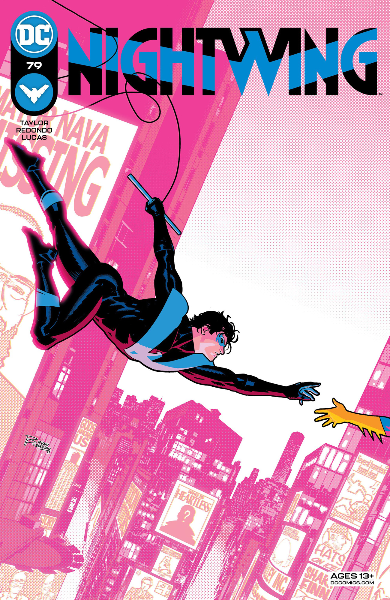
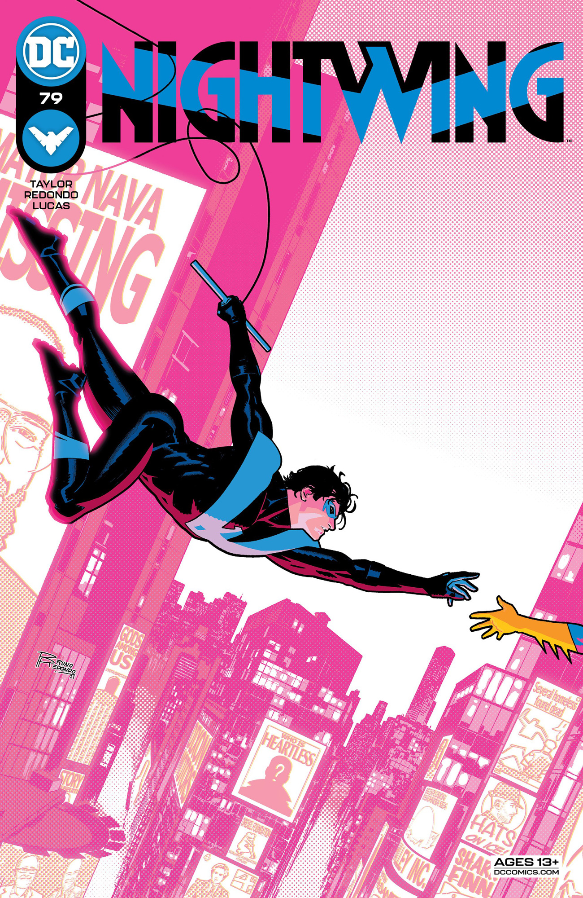

Biography
Nightwing, originally known as Dick Grayson, is one of the most iconic superheroes in the DC Comics universe. Born into a family of acrobats known as the Flying Graysons, Dick's life took a tragic turn when his parents were murdered by a mobster. He was subsequently adopted by Bruce Wayne, the wealthy philanthropist who moonlights as Batman.
As the first Robin, Dick trained under Batman and fought alongside him, developing his skills in hand-to-hand combat, acrobatics, and detective work. However, as he grew older, Dick sought to establish his own identity and stepped out of Batman's shadow. This led him to assume the mantle of Nightwing, a name inspired by a Kryptonian legend, signifying a new chapter in his life.
During his time as Robin, Dick was also a founding member of the Teen Titans, a group of young heroes including Starfire, Raven, Beast Boy, and Cyborg. As their leader, he not only fought against various villains but also acted as a mentor and big brother to his teammates. The Teen Titans provided him a sense of family and belonging, something he craved after losing his own. His leadership style emphasized teamwork, trust, and respect, fostering a supportive environment for young heroes to grow and thrive.
Under his guidance, the Teen Titans faced numerous formidable foes, including Deathstroke, Trigon, and the Hive. The battles they fought were not just physical; they also explored themes of friendship, sacrifice, and the struggle to define oneself as a hero. Dick’s time with the Titans helped him evolve, shaping him into a more empathetic and understanding leader, capable of making tough decisions for the greater good.
After leaving the Titans, Nightwing operates primarily in Blüdhaven, a city rife with crime and corruption. He continues to fight against various villains, including Blockbuster, Lady Shiva, and the Fearsome Five. His experiences have taught him to rely on his instincts and forge his own path, but he remains connected to his roots as a member of the Bat-family.
As Nightwing, Dick embodies the spirit of heroism, using his skills to protect the innocent and inspire others. He has had various romantic interests, most notably Barbara Gordon, also known as Batgirl. Their relationship, characterized by mutual respect and shared experiences, showcases Dick's ability to balance his personal life with his responsibilities as a hero.
Throughout his journey, Nightwing has become a symbol of resilience, proving that even when faced with loss and challenges, one can rise to become a hero in their own right. His legacy is one of hope, courage, and the belief that everyone can make a difference, no matter their past.
Comics
- Nightwing #1 (1996) - A new beginning for Dick Grayson as he takes on the Nightwing identity.
- Nightwing: The New Order (2017) - An alternate future where heroes are outlawed...
- Nightwing: Rebirth (2016) - Dick Grayson returns to Gotham as Nightwing...
- Nightwing: Year One (1998) - A look back at Dick Grayson's early days as Robin...
- Nightwing: Blüdhaven (2000) - Nightwing's adventures in Blüdhaven...
- Nightwing: The Target (2002) - Nightwing faces off against a deadly assassin...
- Nightwing: Lethal Impact (2003) - A thrilling story where Nightwing teams up with Batman...
- Nightwing: The Lost Year (2009) - Follows Dick Grayson during a crucial year of his life...
- Nightwing: The Longest Night (2015) - An intense story where Nightwing confronts his past...
- Nightwing #50 (2019) - A landmark issue that celebrates Nightwing’s legacy...
Gallery
 

Contact Nightwing
We’d love to hear from fellow Nightwing fans! Fill out the form below to get in touch: